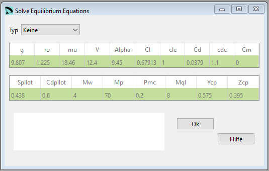

Solve Equilibrium Equations¶
Definition der anfänglichen Basisparameter, die zur Lösung des Längsgleichgewichts des Gleitschirms verwendet werden. Dieser Abschnitt ist informativ und wird vom Konstrukteur verwendet, um die Werte der Kräfte zu untersuchen, die am Gleichgewicht des Flügels beteiligten Kräfte, die Fluggeschwindigkeit, die Winkel und den Gleitkoeffizienten. Um realistische Werte zu finden, ist es notwendig, die Studie gleichzeitig mit dem Programm XFLR5 oder CFD Programmen durchzuführen und mehrere Iterationen vorzunehmen, bis zufriedenstellende Werte erzielt werden. Derzeit ist es noch nicht noch nicht möglich, diese Berechnung vollständig zu automatisieren. Der Konstrukteur muss seine Kriterien je nach Art des untersuchten Flügels anwenden.
Übersetzt mit DeepL.com (kostenlose Version)
{kind=link}
Rohdaten:
*******************************************************
* 35. SOLVE EQUILIBRIUM EQUATIONS
*******************************************************
1
g 9.807 m/s2 gravity of Earth
ro 1.225 kg/m3 air mass density
mu 18.46 muPa·s air dynamic viscosity (microPascals)
V 12.4 m/s estimated flow speed
Alpha 9.45 deg estimated wing angle of attact at trim speed
Cl 0.67913 wing lift coefficient
cle 1.0 lift correction coefficient
Cd 0.03790 wing drag coefficient
cde 1.1 drag correction coefficient
Cm 0.0 wing moment coefficient
Spilot 0.438 m2 pilot+harness frontal surface
Cdpilot 0.6 pilot+harness drag coefficient
Mw 4.0 kg wing mass
Mp 70 kg pilot mass included harness and instruments
Pmc 0.2 m pilot mass center below main karabiners
Mql 8.0 g one quick link mass (riser-lines)
Ycp 0.575 m y-coordinate center of pressure
Zcp 0.395 m z-coordinate center of pressure
g Schwerkraft der Erde (9,80665 m/s2 Standardgravitation)
ro Dichte der Luft kg/m3
mu Dynamische Viskosität der Luft mikroPascal
V Geschätzte anfängliche Strömungsgeschwindigkeit m/s, verwendet für die ersten Werte von Cl, Cd, Cm
Alpha Geschätzter idealer Anstellwinkel deg. Maximale Gleitzahl gemäß aerodynamischer Analyse des Flügels
Cl Flügelauftriebskoeffizient, erhalten durch Analyse mit individuellen Profilen, XFLR5 oder CFD
Cle Multiplikator von Cl, zur Berücksichtigung nicht modellierter Geometrien, im Zweifelsfall 1,0 verwenden
Cd Flügelwiderstandsbeiwert, ermittelt durch Analyse mit Einzelprofilen, XFLR5 oder CFD
Cde Multiplikationskoeffizient von Cd, um nicht modellierte Geometrien zu berücksichtigen, im Zweifelsfall 1,15 verwenden. Wenn die Cd-Daten aus CFD stammen, kann dieser Koeffizient sehr nahe an 1,0 liegen. Derzeit wird untersucht, wie dieser Leparagliding 3.20V Anmerkungen und Änderungen gegenüber früheren Versionen 9 Koeffizient die Ergebnisse beeinflusst. Wahrscheinlich wird durch die Anpassung des erwarteten GR durch Cde der Rest der Parameter sehr nahe an der Realität sein.
Cm Flügelmomentenkoeffizient, erhalten durch Analyse mit individuellen Profilen XFLR5, oder CFD
Pilot Pilot + Frontfläche des Gurtzeugs (m2)
Cdpilot Luftwiderstandsbeiwert Pilot+Gurtzeug (hängt von der Art des Gurtzeugs ab, insbesondere wenn es Verkleidungen hat)
Mw Flügelmasse (kg) ohne Leinen und Tragegurte
Mp Masse Pilot+Gurtzeug+Instrumente (kg)
Pmc Masse des Piloten und des Gurtzeugs im mittleren Abstand von den Hauptkarabinern (m)
Mql Masse eines Quicklinks, der zur Verbindung von Tragegurt und Leinen verwendet wird (kg)
Ycp Y-Koordinate des
Zcp Z-Koordinate des Druckmittelpunkts (m), ermittelt durch Analyse mit Einzelprofilen, XFLR5, oder CFD
Beachten Sie, dass die im LEparagliding verwendeten Achsen folgende sind:
Ursprung (0,0,0)= an der Nase des zentralen Profilabschnitts.
X-Achse horizontal und in Richtung der Spannweite
Y-Achse entlang der Mittelsehne
Z-Achse senkrecht zur XY-Ebene und nach unten weisend (nicht deckungsgleich mit der Schwerkraftachse)
Eine detaillierte Beschreibung in englisch findest Du auf der Laboratori d'envol website.